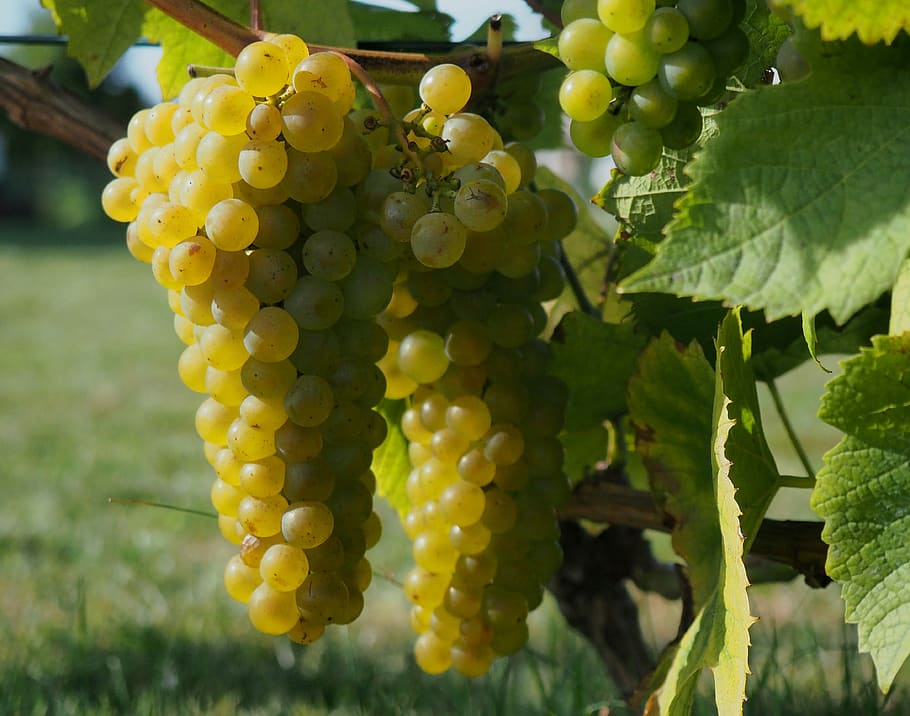

Eijos
- Eit norsk eventyr -
Tida er inne for store endringar for å skape eit bærekraftig samfunn, lokalt og globalt. Eijos visjon er å skape sunne og deilige mat- og drikkevarer for kunden, som er profitabelt for bonden og godt for naturen. For å skape verkeleg bærekraftig varig endring må me kombinere lønnsomheit med bærekraft. Det ynskjer me å kunne vise er mogleg.